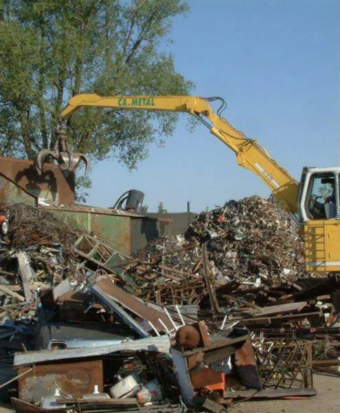
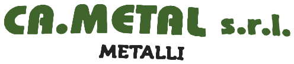

I nostri impianti
Tre stabilimenti per un totale di circa 96.000 mq, 17.200 dei quali coperti, nel cuore del Friuli Venezia Giulia.


Sede e impianto di Ronchis
In Corso Italia 106 a Ronchis, in provincia di Udine, si trovano la sede legale di Ca.Metal e il primo impianto dell'azienda: un'area di circa 10.000 mq, di cui 1.200 coperti.

Impianto di Sedegliano
Lo stabilimento produttivo di Ca.Metal sorge nella zona industriale Pannellia di Sedegliano, in provincia di Udine. Un'area di circa 60.000 mq, di cui 6.000 coperti, con annesso impianto fotovoltaico da 600 kW.

Impianto di San Vito al Tagliamento
Lo stabilimento di Cameco si trova in Via Carnia a San Vito al Tagliamento. Un impianto di circa 26.000 mq, di cui 10.000 coperti, dedicato al recupero e allo smaltimento di diverse tipologie di rifiuti.
Mezzi, impianti e materiali
I nostri mezzi al lavoro e una selezione dei materiali che ogni giorno raccogliamo, selezioniamo e avviamo al recupero. Clicca su una foto per ingrandirla.
Nel cuore del Friuli
I tre impianti sono collegati alla rete autostradale A4, A23 e A28: raggiungiamo rapidamente aziende e cantieri in Friuli Venezia Giulia e Veneto orientale.
- Sedegliano (UD)Stabilimento Ca.Metal · Z.I. Pannellia, Via A. Zappetti
- San Vito al Tagliamento (PN)Stabilimento Cameco · Via Carnia, 13
- Ronchis e Latisana (UD)Sede legale e impianto Ca.Metal (Corso Italia, 106) · sede legale Cameco
Visionare, valutare, risolvere.
Il nostro personale si rende disponibile a visionare, valutare e risolvere le molteplici situazioni che interessano la vostra azienda. Chiamateci per un sopralluogo.